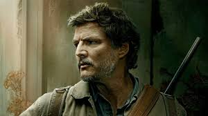

Sobre
"The Last of Us" é uma franquia de jogos e uma série que se passa em um mundo pós-apocalíptico. Com uma narrativa intensa e personagens cativantes, ela explora temas como sobrevivência, perda e vínculo humano.
Personagens
Ellie
Ellie é uma jovem imune ao fungo Cordyceps. Corajosa e determinada, ela é peça central da trama e carrega o peso da esperança da humanidade.

Joel
Joel é um sobrevivente endurecido pela dor e pela perda. Ele se torna uma figura paterna para Ellie ao longo da jornada.
Curiosidades
- O jogo original foi lançado em 2013 para PlayStation 3.
- Ellie foi inspirada em várias figuras femininas fortes do cinema.
- A série da HBO foi aclamada pela crítica e fiel ao jogo.
- Os infectados foram baseados em um fungo real: o Cordyceps.
- A trilha sonora foi composta por Gustavo Santaolalla.